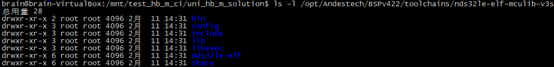
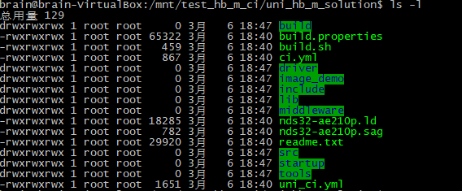
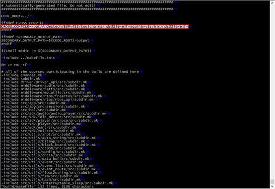
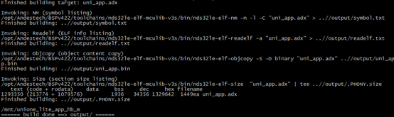
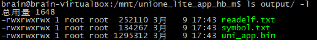

|
蜂鸟M离线方案开发指导手册
v1.0.4
|
（1）下载编译工具
推荐使用Ubuntu 16.04 / centos7以上版本作为开发环境。
交叉编译工具下载地址：链接：https://pan.baidu.com/s/1EHa10q7xkoySt5MA8_abew
提取码：cdbx
下载交叉编译工具并解压到开发环境“/opt”路径中，或其他路径，然后修改makefile文件中配置选项：

（2）已下载的版本里除了可直接烧录使用的image_demo外，文件夹内包含产品方案源码，如下图所示：

（3）修改build/makefile中交叉工具链的路径为实际解压到的工具路径；

（4）安装python环境：sudo apt-get install python
（5）安装lame音频处理工具：sudo apt-get
install lame
（6）安装32位兼容库（如果系统未安装过）：sudo apt-get install lib32stdc++6 lib32z1 lib32ncurses5 lib32bz2-1.0（仅适用于Ubuntu 16.04版本，其他版本请根据系统说明解决兼容性问题）
(1) 执行编译
执行./build.sh，编译成功会看到如下信息：

(2) “output”目录下可以看到编译生成的完整固件，使用章节3中的下载工具即可进行烧录使用，目前build.sh脚本会同时编译生成debug和release两个版本，如需编译特定版本或者查看symbol信息，可以进入build目录，运行make指令手动编译，该方式生成bin文件及symbol.txt文件，存放在output目录中以供查看：
